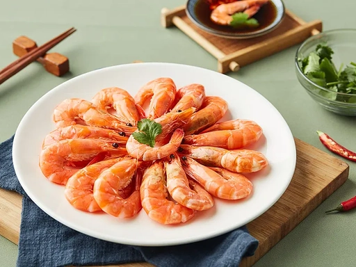
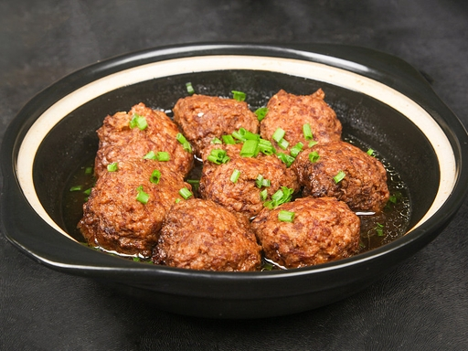

麻婆豆腐
嫩豆腐配牛肉末，花椒与豆瓣酱激出麻辣鲜香，一勺浇在热米饭上最是下饭。

02 · 粤菜白灼虾
鲜活基围虾沸水快灼，蘸一点豉油姜丝，虾肉清甜弹嫩，吃的就是原汁原味。
 03 · 湘菜
03 · 湘菜
剁椒鱼头
胖头鱼铺满红剁椒旺火蒸透，鲜辣汁水渗入鱼肉，最后拌一碗面条才算圆满。

04 · 淮扬菜狮子头
肥瘦相间的肉圆小火煨至酥烂，入口即化，清汤底衬出淮扬菜的温润本味。
嫩豆腐配牛肉末，花椒与豆瓣酱激出麻辣鲜香，一勺浇在热米饭上最是下饭。

02 · 粤菜鲜活基围虾沸水快灼，蘸一点豉油姜丝，虾肉清甜弹嫩，吃的就是原汁原味。
03 · 湘菜
胖头鱼铺满红剁椒旺火蒸透，鲜辣汁水渗入鱼肉，最后拌一碗面条才算圆满。

04 · 淮扬菜肥瘦相间的肉圆小火煨至酥烂，入口即化，清汤底衬出淮扬菜的温润本味。